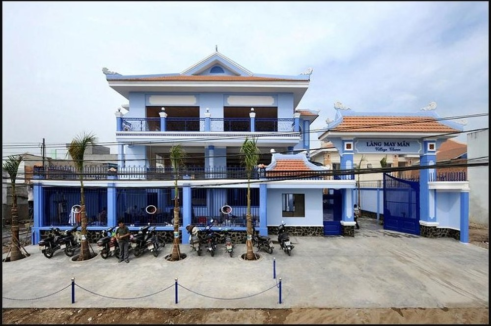
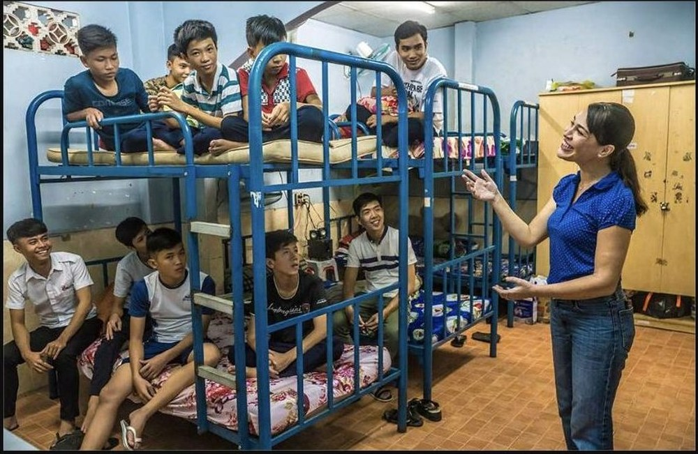
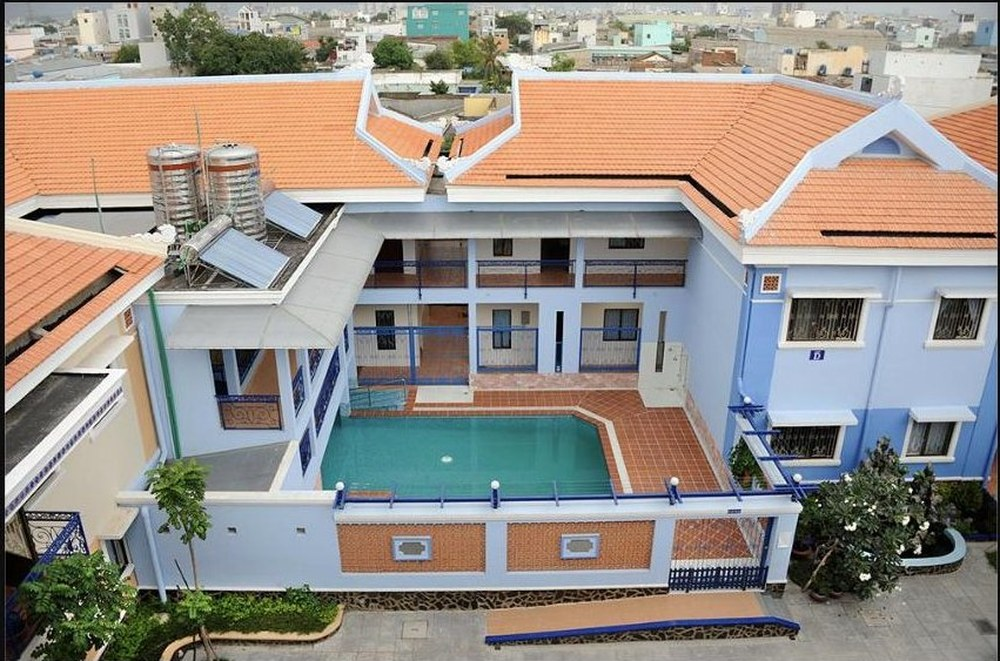

Éducation pour les enfants en situation de handicap
Les enfants en situation de handicap sont trop souvent les premiers exclus de l'école. Entraide Asia soutient des partenaires qui construisent des salles de classe — et des communautés — autour d'eux.

L'accessibilité est d'abord un problème de bâtiment, avant d'être un problème de programme scolaire
Dans une grande partie de l'Asie du Sud-Est, un enfant en situation de handicap physique peut être exclu de l'école simplement parce que le bâtiment lui-même — escaliers, portes étroites, absence de toilettes accessibles — rend sa présence impossible, quelle que soit la volonté de l'école de l'accueillir. Ajoutez le coût de la thérapie ou d'équipements spécialisés, et de nombreuses familles n'ont d'autre choix que d'éduquer un enfant handicapé à la maison, ou pas du tout.
Entraide Asia soutient des partenaires qui s'attaquent aux deux problèmes à la fois : des espaces physiques conçus dès le départ pour l'accessibilité en fauteuil roulant, et le soutien médical et professionnel qui permet aux enfants et jeunes adultes en situation de handicap de construire une vie véritablement autonome.
À quoi ressemble une éducation inclusive en pratique
Salles de classe accessibles
Soutien aux écoles et centres construits ou adaptés pour l'accès en fauteuil roulant, afin que les élèves en situation de handicap physique suivent les cours aux côtés de leurs camarades.
Thérapie & soins médicaux
Kinésithérapie et suivi médical sur place aidant les résidents à regagner en mobilité et en autonomie plutôt que de dépendre de soins infirmiers permanents.
Un hébergement pour ceux qui n'ont nulle part ailleurs
Un hébergement sûr, de type familial, pour les enfants orphelins ou abandonnés et les adultes en situation de handicap qui n'auraient sinon aucun abri.
Une communauté mixte
Des programmes conçus pour que résidents valides et en situation de handicap, enfants et adultes, vivent et apprennent ensemble plutôt que dans des parcours séparés.

Résidents de Maison Chance, au Vietnam, où enfants et adultes valides et en situation de handicap vivent ensemble comme un seul foyer.
Maison Chance, Vietnam
Fondée en 1993 à Hô-Chi-Minh-Ville, Maison Chance accompagne aujourd'hui plusieurs centaines de personnes réparties sur quatre sites, dont Village Chance — une communauté construite sur mesure avec une école primaire accessible aux normes nationales, une piscine de rééducation, et des logements conçus pour être atteints sans une seule marche.
Voir l'histoire complète →
Financer les détails qui rendent l'inclusion possible
Le soutien d'Entraide Asia couvre généralement des améliorations d'infrastructure — rampes, équipements accessibles, adaptations de salles de classe — et des coûts qui, sinon, entreraient en concurrence avec la capacité d'une famille à maintenir un enfant scolarisé ou un résident en rééducation. Christophe visite ces centres directement pour voir où le soutien est réellement nécessaire.